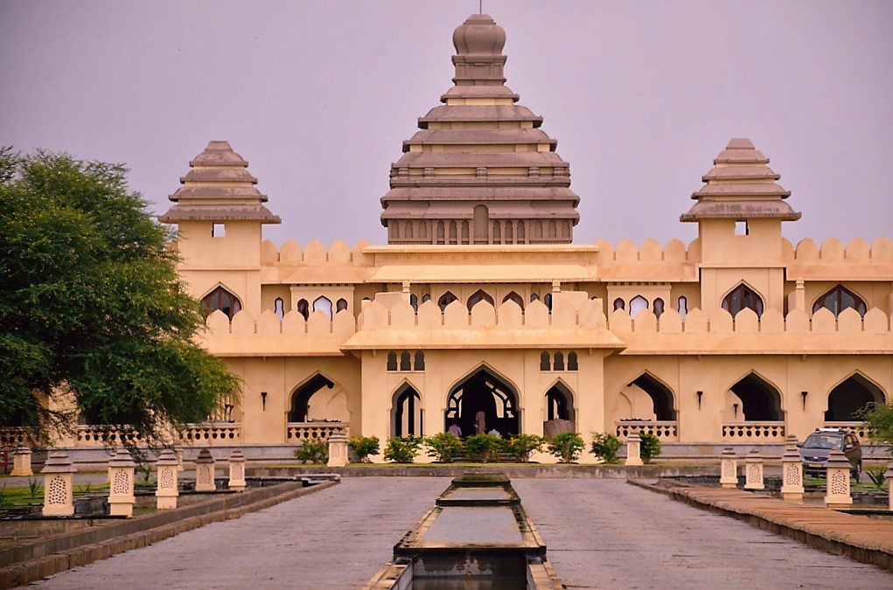
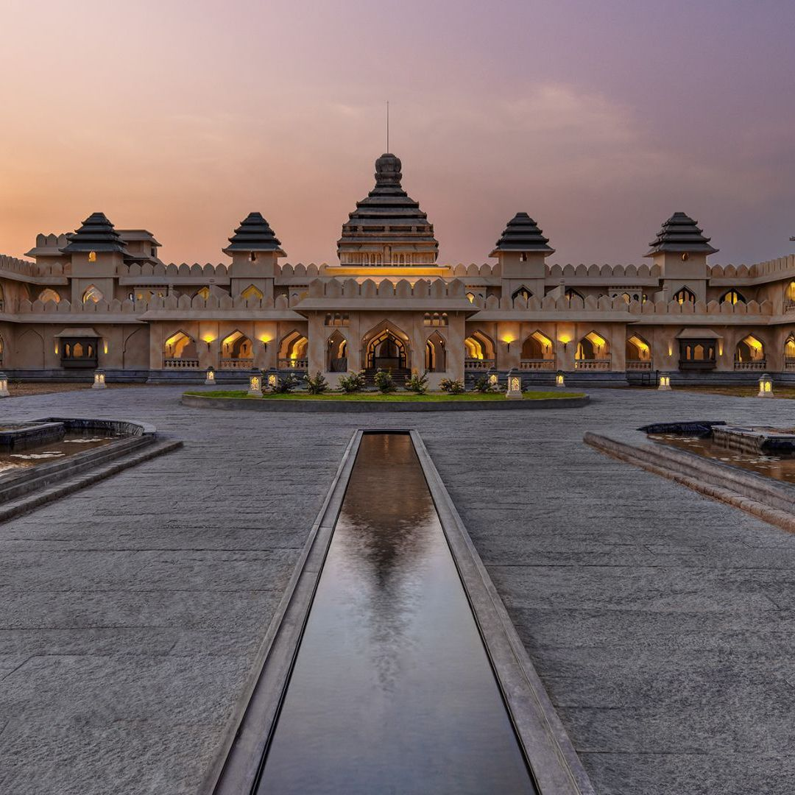

The Royal Complex of the Vijayanagara Empire
Hampi Palaces are part of the vast UNESCO World Heritage Site of Hampi in Karnataka. These magnificent ruins represent the royal center of the powerful Vijayanagara Empire, which flourished between the 14th and 16th centuries.
At its peak, Hampi was considered one of the richest and most advanced cities in the world. Today, the ruins stand as a reminder of India’s glorious medieval heritage.

Hampi became the capital of the Vijayanagara Empire in the 14th century. Under rulers such as Krishnadevaraya, the empire reached extraordinary heights in military power, trade and cultural achievements.
The city attracted traders from Persia, Portugal and other parts of the world. It was known for its wealth, temples, markets and advanced urban planning.
However, after the Battle of Talikota in 1565, the empire fell and the city was destroyed, leaving behind the stunning ruins we see today.
The Royal Enclosure was the administrative and ceremonial heart of Hampi. It contained palaces, audience halls, water tanks and underground chambers.
Lotus Mahal is one of the most iconic structures in Hampi. Its unique Indo-Islamic architectural style and symmetrical design make it highly attractive.
These massive domed chambers were used to house royal elephants. The structure shows strong Islamic architectural influence.
A large bathing complex featuring balconies and decorative corridors, reflecting royal luxury.
Famous for its detailed carvings depicting scenes from the Ramayana.

Hampi architecture combines traditional Dravidian temple style with Islamic influences. Granite stone was widely used, giving structures durability and a monumental appearance.
The layout of the city shows advanced planning with markets, temples, water reservoirs and palace complexes organized systematically.
Hampi was declared a UNESCO World Heritage Site because of its exceptional cultural value. The site preserves one of the most powerful Hindu empires in South Indian history.
The ruins provide valuable insights into medieval trade, architecture and political organization.
Hampi Palaces represent the grandeur and sophistication of the Vijayanagara Empire. The architectural beauty, historical importance and spiritual atmosphere make it one of India’s most extraordinary heritage destinations.